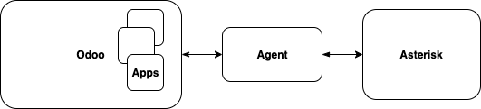

What is OdooPBX?
OdooPBX is a telephony platform built upon Odoo & Asterisk using Saltstack API as a middleware layer:
Odoo (former OpenERP / TinyERP) is a modern WEB business platform that rapidly spreads over the world.
Asterisk PBX is the most popular open source PBX software.
Saltstack is an automation, infrastructure management, remote execution, configuration management, data-driven orchestration, and so much more.
Odoo as a business platform comes with a plenty of ready to use business oriented modules like CRM, Projects, Warehouse, Sales, Events, Website and much more.
OdooPBX adds a layer of telephony to these business modules and thus integrates close telephone communication with the places where it takes place.
Important
With OdooPBX you create phone applications writing 100% Odoo code.
Finally, a special middleware Agent is used to connect Odoo and Asterisk together in a proper way.
The Agent itself is built upon the Saltstack platform and performs the following functions:
Forwards Asterisk AMI events to Odoo according to the downloaded events map.
Executes Asterisk AMI actions received from Odoo.
Protects Asterisk from DDoS and password bruteforce attacks.
Manages the installation & upgrade process.
Provides a server for a WEB based Asterisk CLI.
Here is high level architecture diagram if OdooPBX:
OdooPBX is extremely adaptable and extensible because Odoo is very adaptable by its inheritance architecture and Salt is extensible because it is built to be that.
The Saltstack platform has tons of ready to use building blocks called execution modules that can be used to extend Odoo’s communications with external world and make it extremely quicky to create and maintain.
Read the Developers guide for more information on how to build telephony applications on the OdooPBX platform.
OdooPBX Apps
As OdooPBX is based on Odoo it has modular architecture.
Note
The list of modules can be found in addons repo
The main module is named Asterisk Plus and it is inherited by all other OdooPBX modules.
Other modules add some integration between Asterisk Plus module and different Odoo componoents. For example, Asterisk Plus CRM app requires CRM module to be installed and brings the integration of CRM and telephony.
Installation types
Depending on your existing environment there can be different installation types.
If you have Odoo & Asterisk already running you need to install the OdooPBX agent and configure it for your Odoo and Asterisk instances.
If you have only Odoo running then you need to also install Asterisk and the Agent.
If you have Asterisk running then you should install the Agent on the Asterisk server and also install an Odoo instance near it.
Finally, you might start from zero and would want to install everything from scratch.
Also there are two ways to deploy OdooPBX:
Server wide
Docker based
All these topics are covered in the Installation section.